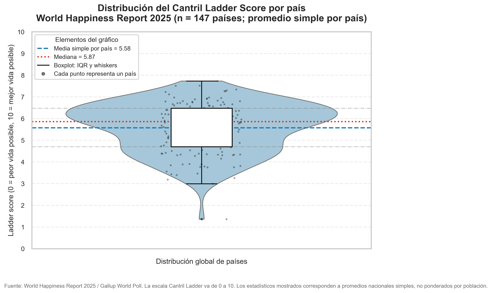

1. Introducción
La visualización de datos es una disciplina que permite transformar datos en gráficos, diagramas y representaciones visuales capaces de facilitar la comprensión de patrones, tendencias y relaciones.
Su importancia radica en que convierte información compleja en un lenguaje visual más intuitivo, ayudando a comunicar resultados de forma efectiva tanto en entornos académicos como profesionales.
2. Desarrollo
Una buena visualización no consiste únicamente en “hacer gráficos”, sino en seleccionar la representación adecuada según el tipo de dato y el mensaje que se desea transmitir. Por ejemplo, los gráficos de barras son útiles para comparar categorías, mientras que los gráficos de líneas permiten observar cambios a lo largo del tiempo.
Además, es importante considerar aspectos como la claridad visual, el uso adecuado del color, la jerarquía de la información y la eliminación de elementos innecesarios que puedan distraer al lector.
3. Figura de ejemplo

La figura anterior muestra un ejemplo de representación visual que permite identificar comparaciones entre categorías de manera rápida. Este tipo de gráficos es especialmente útil cuando se busca resaltar diferencias entre valores discretos.
4. Análisis
El valor de una visualización depende de su capacidad para comunicar información con precisión. Una visualización bien diseñada ayuda al usuario a identificar hallazgos importantes sin necesidad de leer grandes volúmenes de texto.
En este sentido, la visualización de datos no solo cumple una función estética, sino también analítica y comunicativa. Por ello, debe diseñarse con criterios de simplicidad, coherencia y enfoque en la audiencia.
5. Segunda figura

Este segundo ejemplo permite observar cómo las visualizaciones pueden ayudar a identificar tendencias, comportamientos y cambios en series de tiempo.
6. Conclusión
En conclusión, la visualización de datos es una herramienta esencial para interpretar y comunicar información de forma efectiva. Su correcta aplicación permite convertir datos en conocimiento útil, favoreciendo el análisis y la toma de decisiones fundamentadas.